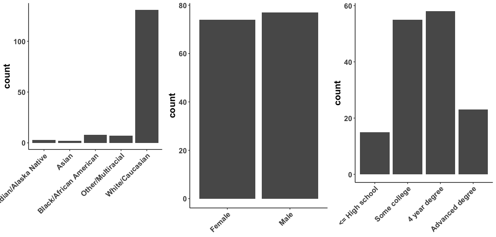

Lagged predictions of next day alcohol use for personalized continuing care support
Kendra Wyant
2025-04-03
Alcohol Use Disorder
- Chronic condition
- Initial treatments are effective
- Continuing care is gold-standard for chronic conditions

Recovery Monitoring and Support System
- Personalized adaptive recommendations
- Prompt individuals to engage with support at times of high risk

Recovery Monitoring and Support System
- Personalized adaptive recommendations
- Prompt individuals to engage with support at times of high risk
- Scalable to address unmet need
Ecological Momentary Assessment
- Direct and frequent insight into subjective feelings and experiences
- Constructs easily map onto well-studied risk factors for lapse
- Appears to be well-tolerated

Model Performance

Current Future Directions
Improve our models by adding more diverse training data
Optimize the delivery of risk-relevant feedback


Current Future Directions
Improve our models by adding more diverse training data
Optimize the delivery of risk-relevant feedback
Combine EMA with other digital data (e.g., geolocation)

Acknowledgements
Contributors:
- John J. Curtin, PI
- Gaylen Fronk
- Jiachen Yu
- Sarah Sant’Ana
- Claire Punturieri
- Susan Wanta
- Madison Herrmann
- Colin Maggard
Study Website:

This research was supported by NIAAA R01 AA024391 to John J. Curtin